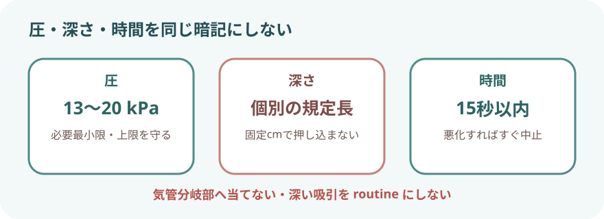
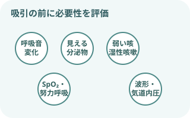
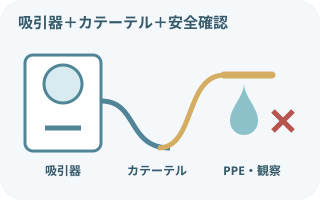
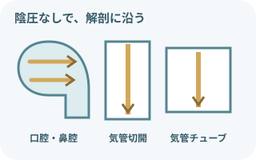
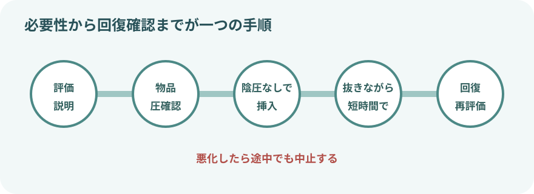
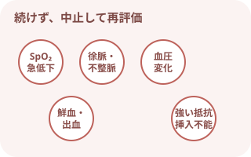
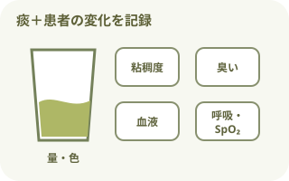

最初に押さえる注意事項
吸引は必要時に、短く行う
- 呼吸音、目に見える分泌物、咳嗽、SpO₂、呼吸仕事量、人工呼吸器波形などから必要性を判断する。
- 定時だからという理由だけで、深い気管内吸引を繰り返さない。
- 陰圧をかけたまま挿入しない。抵抗があれば押し込まない。
- 1回の吸引操作は15秒以内。患者の反応が悪ければ、それより早く中止する。
- 低酸素、徐脈・不整脈、血圧変化、強い苦痛、出血があれば中止して再評価する。
清潔と曝露対策
- 標準予防策を基本に、飛沫・体液曝露へ手袋、マスク、眼の防護、ガウン・エプロンを選ぶ。
- 開放式の人工気道吸引は無菌操作で行う。
- 開放式気道吸引はエアロゾル曝露を伴い得る。感染経路別予防策と換気・呼吸用防護具の指示を確認する。
吸引圧・深さ・時間を分けて考える

| 部位 | 成人の目安 | 安全に使うポイント |
|---|---|---|
| 鼻腔 | 13～20kPa／15～20cm／10～15秒 | 圧・時間は成人の目安。深さは鼻腔の構造、分泌物の位置、患者ごとの規定長で決める。 |
| 口腔 | 13～20kPa／5～10cm／10～15秒 | 圧・時間は成人の目安。見える分泌物へ届く範囲を基本とし、咽頭へ無理に進めない。 |
| 気管 | 13～20（20～30）kPa／5～10cm／10～15秒 | 成人例は必要最小限で20kPa以下を基本。20～30kPaを一般設定にしない。浅い吸引を優先し、深さは人工気道の長さで決める。 |
- 13～20kPa：およそ100～150mmHg。機器では陰圧の符号を含めた表示になる場合がある。
- 「気管分岐部まで10～12cm」：どこから測るかで変わるため固定知識にしない。気管分岐部へ接触させない。
- 吸引圧：カテーテル接続前にチューブを閉塞して設定値を確認する。
吸引が必要なサイン

一つではなく、変化を組み合わせる
- 痰が絡む音、粗い副雑音、呼吸音の低下
- 口腔・人工気道内に見える分泌物
- 痰を出せない弱い咳、湿性咳嗽
- SpO₂低下、呼吸数増加、努力呼吸、チアノーゼ
- 人工呼吸器の気道内圧上昇、波形の鋸歯状変化、換気量低下
吸引後も改善しない場合は、分泌物以外の原因を考える。低酸素だけを見て何度も吸引しない。
必要物品

部位と方式に合わせてそろえる
- 吸引器、接続チューブ、吸引ボトル
- 適切な種類・太さの吸引カテーテルまたはヤンカウアー
- 手袋、マスク、眼の防護、ガウン・エプロン
- パルスオキシメータ、聴診器
- 廃棄物容器、必要時は酸素投与・蘇生物品
- 開放式人工気道吸引：滅菌手袋と滅菌カテーテル
カテーテルの太さと深さ

成人10～12Frは例。人工気道との比で選ぶ
- 成人の10～12Frは、よく使われる太さの一例
- 成人・小児の人工気道では、カテーテル外径がチューブ内腔の50%未満になるよう選ぶ
- 太すぎると換気・酸素化低下と強い陰圧を起こしやすい
- 細すぎると粘稠痰を除去できない場合がある

部位ごとの進め方
- 口腔：見える分泌物へ。舌・口腔粘膜を傷つけない
- 鼻腔：鼻腔底に沿って、顔面に対し上向きではなく後方へ
- 人工気道：チューブ・カニューレの先端付近までの浅い吸引を基本
- 抵抗、出血、強い咳、疼痛があれば無理に進めない
吸引前の観察
- 呼吸状態：呼吸数、深さ、リズム、努力呼吸、胸郭運動、チアノーゼ
- 肺音：左右差、副雑音、呼吸音減弱、痰が移動する音
- 酸素化：SpO₂、酸素投与方法・流量、人工呼吸器設定
- 痰：量、色、粘稠度、臭い、血液混入、喀出力
- 循環・意識：脈拍、血圧、意識、表情、苦痛・不安
- 人工気道：固定位置、接続、カフ、回路、アラーム、閉鎖式カテーテルの状態
吸引の基本手順
- 必要性を評価し、説明する
吸引の目的と方法を伝える。呼吸・肺音・SpO₂・循環・痰を基準値として確認。
- 体位と物品を整える
禁忌がなければ上体を起こす。吸引器、カテーテル、PPE、酸素・観察物品を準備。
- 吸引圧を確認する
接続チューブを閉塞して設定圧を確認。必要最小限の圧から始める。
- 酸素化と清潔を準備する
人工気道では指示された方法で事前酸素化。開放式は滅菌操作。口腔・鼻腔は部位に合う清潔操作。
- 陰圧をかけずに挿入する
部位ごとの方向と規定深さまでゆっくり進める。抵抗があれば中止。
- 抜きながら短時間吸引する
必要に応じてカテーテルをゆっくり回し、15秒以内で抜去。強い上下運動をしない。
- 回復を待って再評価する
呼吸・脈拍・SpO₂・表情を確認。再吸引は回復を待ち、必要性が残る場合だけ行う。
- 片づけ、観察・記録する
痰の性状、回数、患者反応、前後の変化を記録。手指衛生を行う。

人工気道吸引で追加すること
- 開放式と閉鎖式のどちらを使うか、人工呼吸器・感染対策・患者状態で確認する。
- 成人・小児では吸引前の酸素化を行う。酸素濃度と時間は患者ごとの指示に従う。
- 開放式では、回路を外す時間を最小限にし、滅菌手袋・滅菌カテーテルを使う。
- 浅い吸引を基本にし、深い吸引は浅い方法で除去できない場合に限る。
- 生理食塩液を気道へルーチンに注入しない。痰が粘稠なら加湿、体位、全身水分、薬剤、気道クリアランス方法を再評価する。
- 吸引後、人工呼吸器設定・アラーム・接続・酸素濃度を元の指示へ戻したか確認する。
中止して応援を呼ぶサイン

吸引を続けるほど悪化することがある
- 急なSpO₂低下、チアノーゼ、無呼吸
- 徐脈、頻脈、不整脈、血圧の大きな変化
- 意識低下、強い苦痛、激しい咳、嘔吐
- 鮮血、出血の増加
- カテーテルの強い抵抗、挿入不能
- 吸引後も換気・酸素化が改善しない
吸引を中止して酸素化・換気・循環を評価し、応援を呼ぶ。人工気道の閉塞が疑われる場合は、院内の気道緊急対応へ移る。
吸引後の観察・記録

「取れた量」だけで終わらない
- 呼吸数・努力呼吸・SpO₂・肺音の変化
- 脈拍・血圧・意識・表情・苦痛
- 痰の量、色、粘稠度、臭い、血液混入
- 吸引部位、カテーテル、設定圧、挿入深さ、1回の時間、回数
- 事前酸素化、吸引中の変化、中止理由、回復までの経過